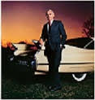

Rapport de stage
L'entreprise:
Enterprise rent-a-car est une société fondée en 1957 par Jack C. Taylor et reprise par son fils Andrew C. Taylor en 2012.
L'activité, lancée par Jack Taylor remonte à 1957.

Il s’agissait alors d’une entreprise de crédit-bail automobile qui ne comptait que sept voitures et qui était exploitée à partir du sous-sol
d’un concessionnaire automobile de la ville natale de son fondateur,St. Louis, dans le Missouri.
Cinquante ans plus tard, cette société est aujourd’hui la plus importante et la plus complète de toutes les entreprises de location de voitures
au monde:elle possède et exploite plus d’un million de véhicules.
Elle posséde également d’importantes activités au-delà de la location de voitures, dont des sociétés de gestion de flotte, de vente
automobiles,d’auto-partage et de location de véhicules utilitaires.
Le service d'infrastructure:
J'ai vu les salles où se trouvent les serveurs, routeurs, switchs.
Cette salle est rafraîchie par des ventilateurs énormes pour garder la salle à une température aux alentours de 18C° pour éviter toute surchauffe des matériaux.
Les switchs sont les intermédiaires entre les ordinateurs de l'entreprise et le serveur.
Ils permettent une bonne communication des informations.
Par exemple: un ordi dont le wifi bug ou un téléphone ne fonctionnant plus sera géré par le service infrastructure.
Grâce à l'équipe composée de Mathieu L., Dominique B., Mathieu.C et Olivier.J j'ai pu apprendre à décrypter le langage binaire, à lire des adresses ip, à gérer des ip, à créer un serveur ainsi que le réparer.
Le service de développement:
Ex: Site de l'entreprise
Les développeurs développent également des outils pour faciliter certaines tâches répétitives à des employés.
Ex:
- Resolution
- Fifi
- Seek In The City
Remerciements:
Remerciements à toute l'équipe de l'infrastructure.
Remerciements à toute l'equipe de développement.
Remerciements à toute l'equipe de test de site.
Et bonne continuation à vous tous :)